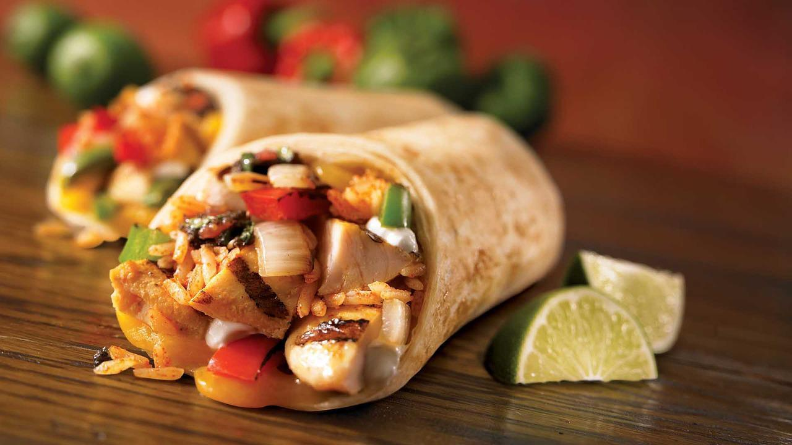

Mexikanische Burritos

Zubereitung
Die Tomaten fein hacken und wieder in den Saft zurückgeben. Den Mais auf einem Sieb abtropfen
lassen. Die Paprikaschoten putzen, entkernen, waschen, trocknen und in kleine Stücke schneiden. Die
Zwiebeln schälen und würfeln.
Das Olivenöl in einer Pfanne erhitzen und das Hackfleisch darin scharf anbraten. Zwiebeln und Paprika dazugeben und alles etwa 5 Minuten garen, bis das Fleisch durchgebraten ist. Mit Salz, Pfeffer, Cayennepfeffer und Kreuzkümmel kräftig würzen. Das Tomatenmark dazugeben, kurz mitrösten, dann die gehackten Tomaten mit dem Saft und den Mais unterrühren. Die Masse einige Minuten einkochen lassen, bis fast die gesamte Flüssigkeit verdampft ist.
Mit den Gewürzen und etwas Zucker abschmecken. Die Tortillas mit der Crème fraîche bestreichen und die Hackfleischmasse gleichmäßig darauf verteilen. Mit etwas geriebenem Käse bestreuen. Die Tortillas zu Burritos aufrollen und in eine Auflaufform legen.
Mit dem restlichen geriebenen Käse bestreuen und im auf 200 Grad vorgeheizten Backofen 4 - 5 Minuten überbacken, bis der Käse zerlaufen ist. Sofort servieren.
Das Olivenöl in einer Pfanne erhitzen und das Hackfleisch darin scharf anbraten. Zwiebeln und Paprika dazugeben und alles etwa 5 Minuten garen, bis das Fleisch durchgebraten ist. Mit Salz, Pfeffer, Cayennepfeffer und Kreuzkümmel kräftig würzen. Das Tomatenmark dazugeben, kurz mitrösten, dann die gehackten Tomaten mit dem Saft und den Mais unterrühren. Die Masse einige Minuten einkochen lassen, bis fast die gesamte Flüssigkeit verdampft ist.
Mit den Gewürzen und etwas Zucker abschmecken. Die Tortillas mit der Crème fraîche bestreichen und die Hackfleischmasse gleichmäßig darauf verteilen. Mit etwas geriebenem Käse bestreuen. Die Tortillas zu Burritos aufrollen und in eine Auflaufform legen.
Mit dem restlichen geriebenen Käse bestreuen und im auf 200 Grad vorgeheizten Backofen 4 - 5 Minuten überbacken, bis der Käse zerlaufen ist. Sofort servieren.
Rezept erstellt von

Ahmet Özkurt